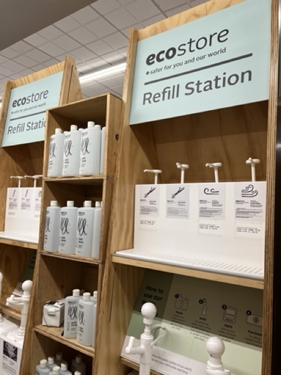
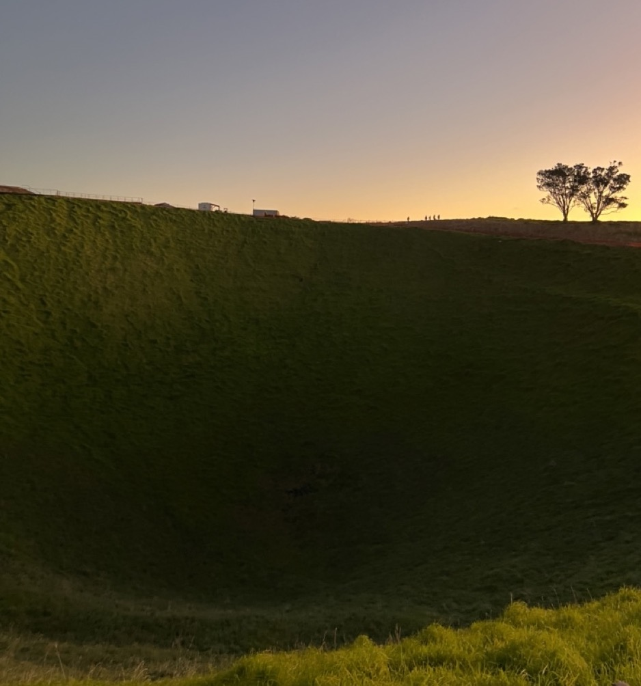

8點來紐西蘭才知道的紐西蘭生活習慣

和最喜歡景點 - Blue Spring 裡唯一的廁所自拍，是一間用木屑(Sawdust)沖馬桶的Bio Loo。 (有發現大英帝國紐澳居民都會稱廁所為Loo)
1 . 廁所 - 乾淨且容易找到
(綠燈代表沒人；黃燈代表有人；紅燈代表關閉)
遇到上圖非常科技的廁所，要確認有鎖上，沒鎖好燈不會亮，會有人聲廣播提醒要鎖上廁所門，廁所有限時10分鐘。
我就不小心開到一個韓國女生的廁所，不確定她是沒鎖好還是待超過10分鐘。
2 . 垃圾桶 - 隨處可見還有資源回收
超市外面會有垃圾桶及資源回收，覺得這點很棒，絕對是旅人友善的國家。
3 . 信用卡 - 沒有不收信用卡的地方
-
去的場所都收信用卡
-
有些場所不收錢
-
有些場所願意收錢但要錢剛剛好 (不找零)
-
有些場所刷卡會收信用卡服務費(Surcharges)
結論是紐西蘭幣可以換少一點！
4 . 友善環境大國 - 產品隨處可見強調友善環境的標誌
在超市就可分裝清潔用品，減少瓶裝的浪費。

5 . 紐西蘭品牌 - 品牌對出身紐西蘭出身的驕傲
（最喜歡的果汁牌子—HAWER’S BAY）
以地名為品牌名的紐西蘭製品，例如：HAWER’S BAY果汁 (以種蘋果樹聞名的地方，北島的東邊)
或是在超市內的牆壁上會有大大的標語寫：Proudly 100% NZ Owned and Operated
( 在超市 NEW WORLD 內與剛買的超甜蘋果汁合照 )
另一個也是以地名為品牌名的奶製品， PUHOI VALLEY奶製品 (奧克蘭再往北開約50公里)，也是一個我們常買的牌子。
奶製品作為品牌名在台灣也很常見，例如：六甲田莊的鮮奶。

6 . 奧克蘭 - 是一座火山城市有53個火山錐
岩漿噴發出表面，經過時間累積形成一個凹陷的盆地，如下圖。
 （爬上Mount Eden，上面有一個凹陷的地形，這才發現奧克蘭是著名的火山城市。）
7 . 威靈頓 - 是首都
紐西蘭的首都不是奧克蘭，奧克蘭是紐西蘭人口最多的城市。
8 . KIWI - 是夜行性動物，嗅覺敏銳，奇異果因奇異鳥得名
來一趟紐西蘭，一定會被奇異鳥圓滾滾的屁股的魅力征服。
 （想著在野外是否可以看到KIWI，白天的話KIWI也是在睡覺吧。）
（想著在野外是否可以看到KIWI，白天的話KIWI也是在睡覺吧。）
紐西蘭空軍的標誌就是KIWI，但KIWI是一種不會飛的鳥類。